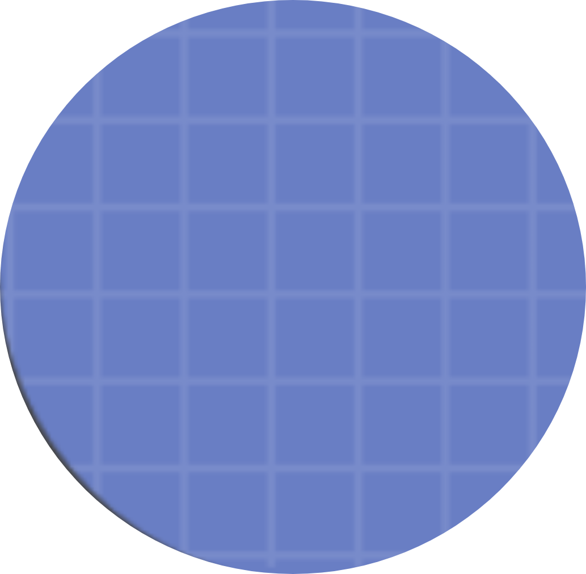

AutoThreads

AutoThreads is a bot i made and it makes threads automatically. The way it works is very simple, it checks how many people are typing at the moment and if it exceeds a certain number it will call a vote (democracy), if it exceeds a certain number of votes it will create a new thread. Ta-da!